某聊天app获取用户头像url分析
分析一个海外 app，目标是找到 app 发送获取用户头像请求接口并用 frida 实现主动调用
抓包初步分析
因为不知道用户头像关键字，所以没法在 jadx 中直接搜索定位关键位置，考虑抓包定位。
搜索好友时能看到用户的头像，这里肯定有图片请求，图片 url 一般都是 http 请求，直接上中间人抓包工具
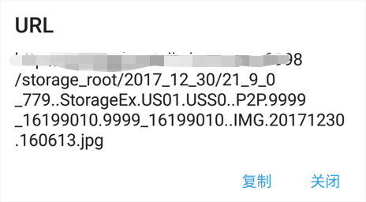
看起来 url 有点复杂，应该不需要自己构造，可能是前面某个请求的 response 中带有这条 url ，在抓到的包中翻找也只找到 toUid 接口，作用是通过用户名获取 uid 值，且该包应答中并没有头像 url
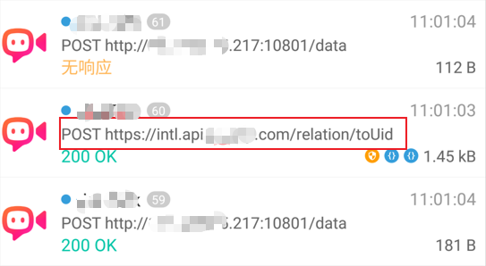
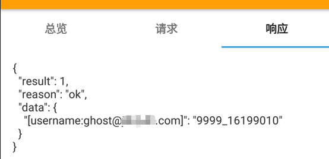
找关键方法并编写主动调用代码
先在 jadx 中搜索 “toUid” 看看
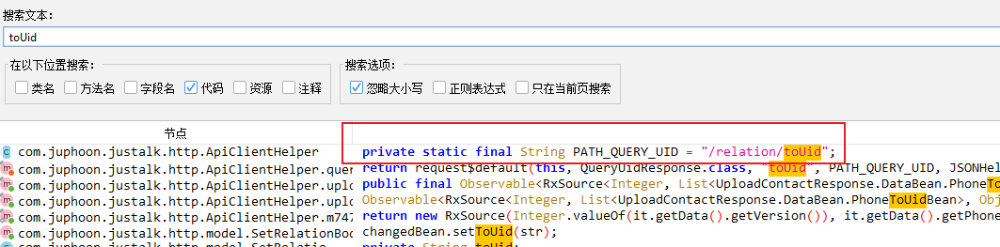
转到引用常量值的地方，找到 queryUid 方法，所属类是 ApiClientHelper ，上下翻没找到 query 头像相关逻辑
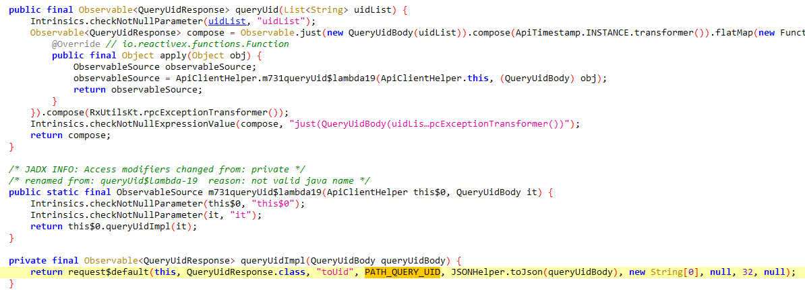
因为 app 用了 okhttp 发送 http 请求，于是我尝试 hook okhttp3.Request.Builder.url ，想通过函数栈回溯头像请求的产生位置，然而 app 的 http 请求是异步，即请求的产生与发送在两个不同的线程，回溯发送线程函数栈自然是找不到请求的构造点。
换一个思路，请求返回的 json 数据肯定要解析，拿到里面的uid然后保存到某个表示用户的类实例中，hook org.json.JSONObject.$init 和 com.google.gson.Gson.fromJson ，在传给 Gson.fromJson 的参数上发现了回应数据
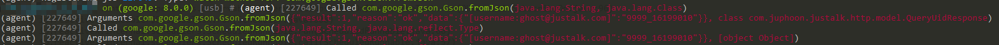
接着打印它的函数栈，其中的 queryMtcUserProp 很让人在意，意思是查询用户属性，头像也属于用户属性
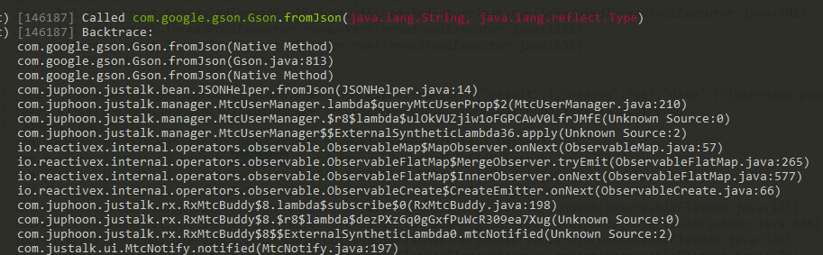
看看 MtcUserManager 的 queryMtcUserProp 方法
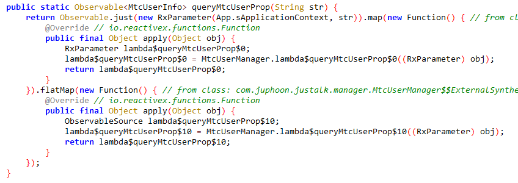
hook 打印它的参数和函数栈，可以看到参数就是 uid ，请求是在 RxSearch 的 searchByJusTalkId 方法发起的
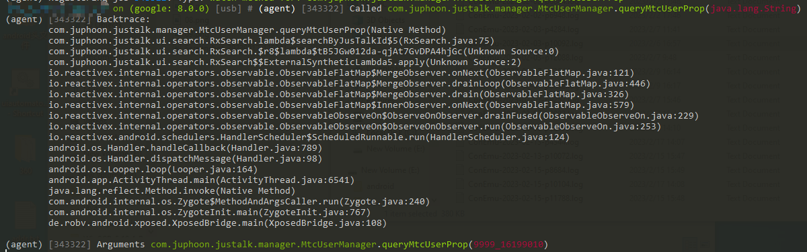
searchByJusTalkId 第一个参数是搜索栏输入的用户名，该方法用了 RxJava ，分析起来挺痛苦的，我在图中把要点画了出来。首先经过本地查找，找不到就调用 lambda$searchByJusTalkId$7 发请求
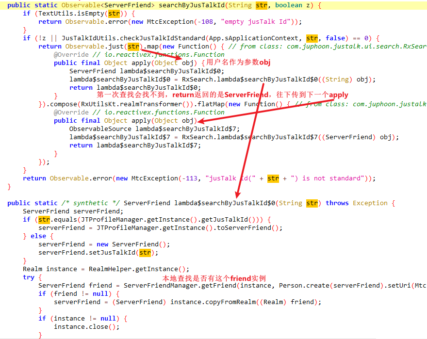
lambda$searchByJusTalkId$7 调用关键方法 RxUidManager.queryOneImpl
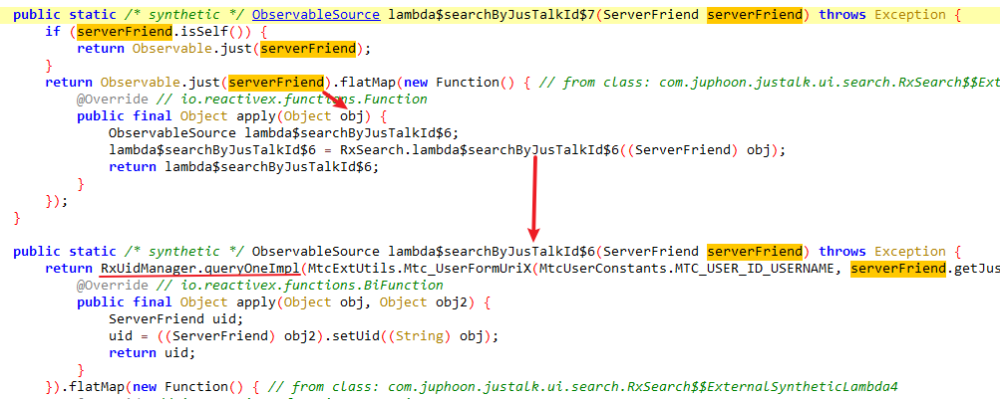
hook 它得知参数是 toUid 接口的 uriList 字段，返回值是查询结果，只不过是 Observable<string> 类型，从里面可以取出 uid 字符串
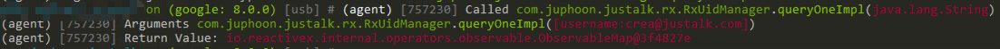
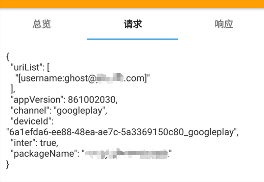
因为请求头像需要 uid ，所以这里要 hook queryOneImpl ，然后解析返回值。解析 Observable 需要创建观察者 Observer ，然后实现它的 onNext ，方法传进来的参数即是我想要的 uid 字符串，用 frida 写个主动调用
1 | function internalQueryUid(userName) { |
queryOneImpl 请求完后继续往下进入 lambda$searchByJusTalkId$5
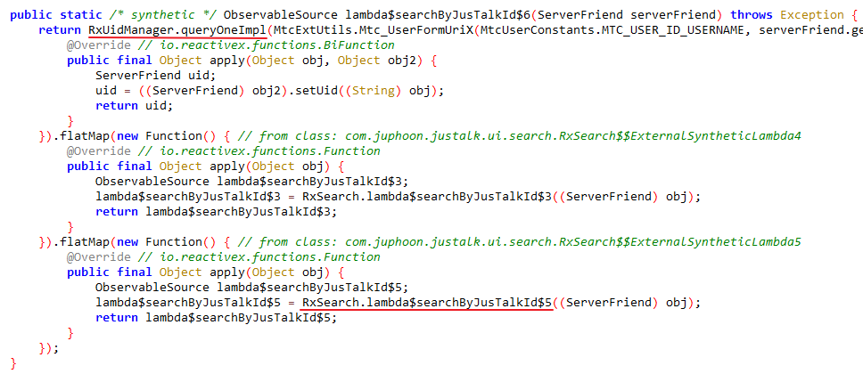
找到第二个关键方法 queryMtcUserProp
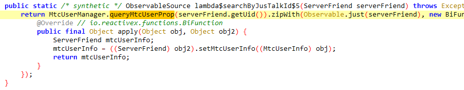
进入里面看到使用 json 保存要查询的属性值，然后继续跟入
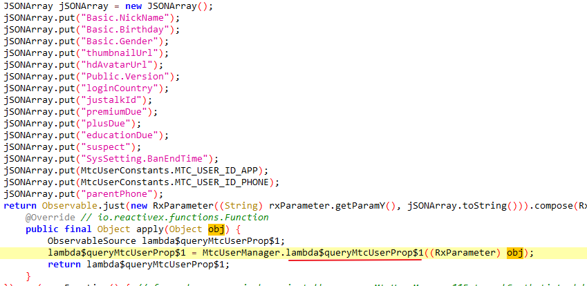
在这调用的 Mtc_BuddyQueryUserId 方法第一个参数是回调函数，用于接收回应数据，第二个参数是 uid ，第三个参数是前面的 json 转成的字符串
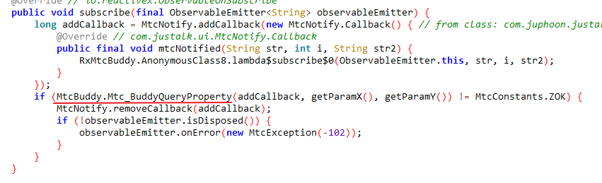
最后调用 MtcBuddy 的 jni 函数
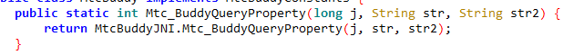
同时还发现查询用户 id 也有相应的 jni 函数，就不需要使用 RxJava 订阅的方式获取返回数据了
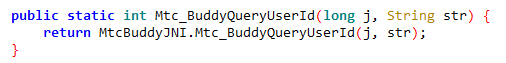
总结一下：
- 调用
MtcBuddy的Mtc_BuddyQueryUserId获取用户 id ，第一个参数是回调函数对应的序号，第二个参数是用户名组成的 url ，这一步获取 uid 值 - 调用
MtcBuddy的Mtc_BuddyQueryProperty获取头像 url ，第一个是回调函数对应的序号，第二个参数是 uid 字符串
再看看怎么创建用于接收应答数据的回调
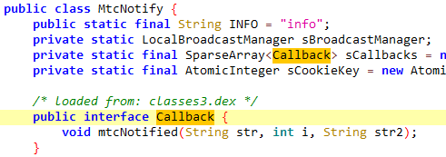
Callback 是 MtcNotify 的内部接口，实现它的 mtcNotified 即可，返回数据在第三个参数上，第二个参数是回调序号，之后调用 MtcNotify 的 addCallback 注册回调，这个方法就会返回回调函数对应的序号
同样用 frida 编写主动调用代码
1 | // 添加回调 |
效果如下，输入用户名 “ghost”
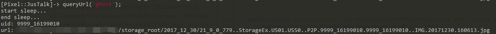
结束
整个过程最耗时间的是找到调用点，之后 frida 脚本就好写了。后续可以把 frida 移植到 xposed 上，搭配模拟器跟 sekiro 的组合就可以做一个爬虫服务器了。